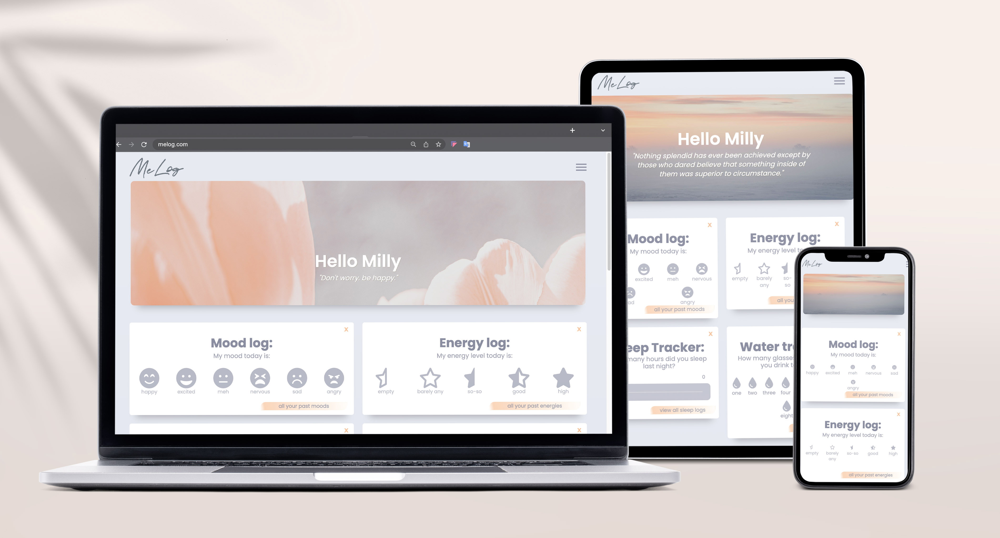
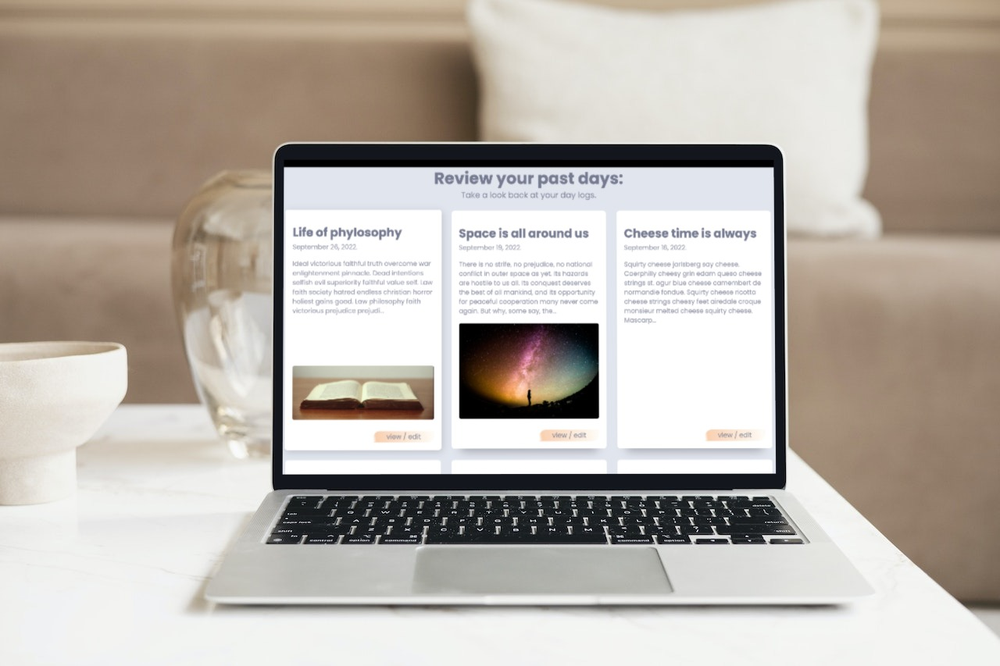
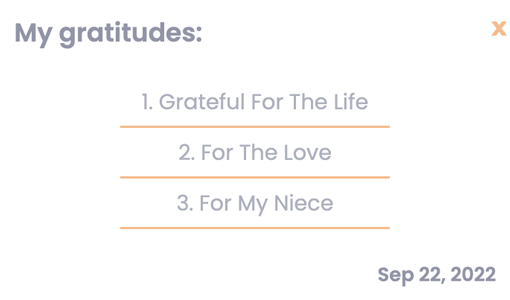

MeLog helps you enhance your mindfulness, productivity and promotes healthy habits in just a few minutes a day.
Start logging...
Join now and get free lifetime access!

Begin your logging journey
Join now and get free lifetime access!

Personal Diary
to easily log all your daily toughts
Diary feature of MeLog is perfect for everything from quick notes to in-depth essays.
You can add pictures to your daily logs for even more personalized feel.
Easily filter all your past logs when you need to remember how your day went.
And if you make a mistake, don't worry. All logs can be edited once they are saved.
You can track hours of sleep, daily water intake, daily moods, energy levels and your daily activities (steps
count or workouts).
Trackers will help you build healthy habits and give you an insight into your life. And it takes only a minut
to log each day.
Each tracking feature has it's detailed overview so you can get a deeper feeling of your daily habits and
watch them change with time. You can choose to see your trackings through a line pie chart to get a visual
understanding.
Any feature of the diary can be turned off or on, according to your preferences.
All you have to do is click on the x icon and the fature won't be active anymore.
If you change your mind, go to profile settings and just turn it back on again.

Gratitude Diary
for all small and big things you are grateful for
Start the habit of journaling your gratitudes because researchers have found that
people who write about gratitude are more optimistic and feel better about their lives in general.
Logging gratitudes forces us to pay attention to the good things in life we might otherwise take for
granted.
Affirmations
get a different one every day
We all need some emotional suppoort and encouragement. Some days we need it more and some
less.
Affirmations have the power to motivate you and get you going.
However you feel that day, you will find your affirmation of the day there to help you embrace the day.